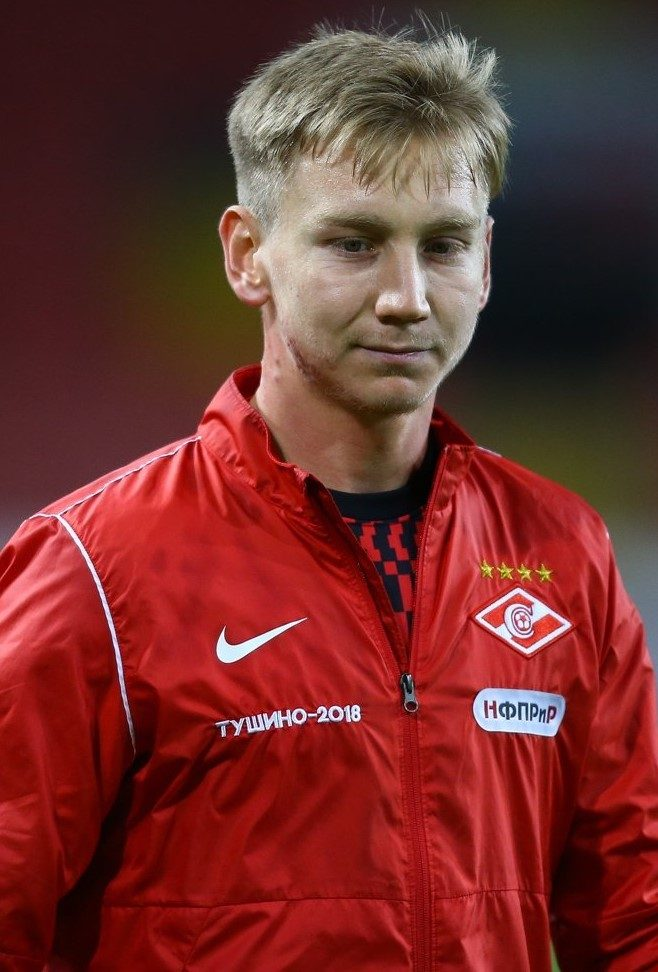
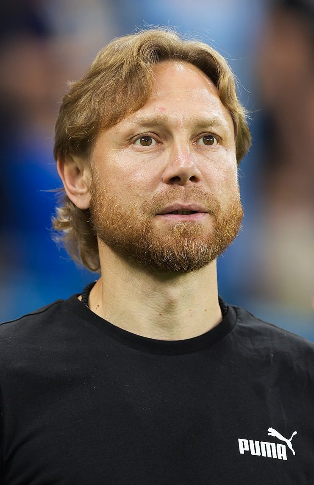

戈洛温与乌梅亚罗夫无缘俄罗斯队11月热身赛
主帅瓦列里·卡尔平确认伤病隐患，国家队目前正在塔什干备战即将到来的友谊赛。

随着11月国际比赛日的临近，俄罗斯国家足球队遭遇了严峻的人员危机，中场核心亚历山大·戈洛温（Aleksandr Golovin）与奈尔·乌梅亚罗夫（Nail Umyarov）双双无缘在塔什干的合练。
主教练瓦列里·卡尔平（Valery Karpin）于11月11日证实，乌梅亚罗夫在国家队集训期间受伤。这位莫斯科斯巴达克的中场大将确定将缺席11月的全部比赛。效力于法甲摩纳哥队的戈洛温同样缺席了球队最近的一次赛前训练，这让他在接下来的热身赛中能否出场打上了大大的问号。
对中场布局的影响

乌梅亚罗夫一直是莫斯科斯巴达克防守型中场的常规人选，他的缺阵迫使卡尔平不得不对战术进行调整。自上演国家队首秀以来，乌梅亚罗夫就被视为从后场发起进攻的重要棋子。他的因伤退出，要求教练组必须寻找替代人选，以平衡球队在对阵国际对手时的攻防转换。
戈洛温的身体状况依然是球迷关注的焦点。作为少数几位目前在欧洲五大联赛效力的俄罗斯球员，他的参与对球队的进攻体系至关重要。目前全队正驻扎在塔什干，全力备战一系列热身赛。在俄罗斯俱乐部和国家队遭到国际足联（FIFA）和欧足联（UEFA）持续禁赛的背景下，这些比赛对于维持球队的凝聚力至关重要。
11月集训的背景
在缺乏正式预选赛的情况下，这些比赛为俄罗斯足协（RFU）提供了一个考察年轻天才和评估阵容深度的关键契机。失去两名主力球员，让保持稳定竞技状态的目标变得更加复杂。预计医疗团队将在本次集训结束后，对戈洛温的康复周期给出更明确的说法。
*
对俄罗斯队而言，当务之急是考察此前出场时间不多的球员。在国家队已经处于受限的国际比赛环境中的背景下，适应伤病困扰已成为卡尔平执教期间的一个常态。球队在乌兹别克斯坦的训练仍在继续，教练组正密切监控剩余队员的身体状况，以迎接即将到来的比赛。